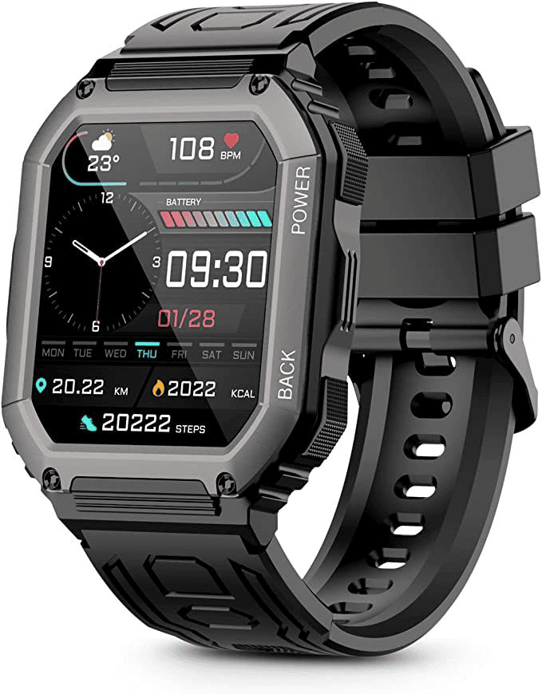

Mobile Phone
Mobile phones have become indispensable tools in modern life, transforming the way we communicate,
work, and access information. Here are some key areas where mobile phones prove highly useful:
Communication: Mobile phones allow instant communication through calls, texts, and video chats.
With messaging apps and social media, they make it easy to stay in touch with friends, family,
and colleagues across the world.
Internet Access: Modern smartphones provide on-the-go internet access, making it possible to
browse websites, access social media, check emails, and more from virtually anywhere with a
network connection.
Productivity and Work: Many people use their phones for work-related tasks such as managing
emails, scheduling, taking notes, and even participating in virtual meetings. Mobile
applications also support document creation, editing, and sharing.
Navigation and Location Services: GPS-enabled smartphones offer navigation and mapping services,
helping users find routes, explore new places, and get real-time traffic updates, making travel
more convenient and efficient.
Entertainment: Mobile phones serve as portable entertainment centers where users can stream
movies, listen to music, play games, read books, and enjoy social media, making them versatile
tools for recreation.
Mobile phones are versatile, combining functionality and convenience to enhance productivity,
connectivity, and access to information across every aspect of daily life.
Laptop
Laptops are incredibly useful due to their portability, versatility, and powerful capabilities. Here
are a few key advantages:
Portability: Laptops allow people to work, study, or enjoy entertainment anywhere, making them
ideal
for professionals, students, and frequent travelers.
Productivity: Equipped with essential applications for office work, media editing, and coding,
laptops boost productivity and offer nearly the same capabilities as desktops.
Educational Value: They are essential tools for students and educators, enabling access to vast
resources, virtual classrooms, and collaboration tools.
Entertainment: With streaming services, gaming options, and media creation tools, laptops also
serve
as excellent entertainment devices.
Energy Efficiency: Modern laptops are more power-efficient than desktops, especially useful for
users looking to reduce energy consumption.
Laptops have become integral to modern life, merging power with convenience to meet the needs of
diverse users across professional, educational, and personal realms.
Smart Watch

Smartwatches have become popular for their convenience and versatility, offering a range of useful
features:
Health and Fitness Tracking: Smartwatches monitor heart rate, steps, calories burned, sleep
quality, and other metrics, helping users track fitness goals and maintain a healthy lifestyle.
Convenient Notifications: Smartwatches deliver notifications for calls, messages, and app
alerts directly on the wrist, allowing users to stay updated without constantly checking their
phones.
GPS and Navigation: Many smartwatches provide GPS navigation and mapping, making them useful
for outdoor activities like running, cycling, and hiking.
Emergency Assistance: Some smartwatches have emergency features like fall detection and SOS
alerts, allowing users to quickly call for help in critical situations.
Contactless Payments: Many smartwatches support mobile payments, enabling users to make
secure, contactless transactions directly from their wrist.
Customization and Personalization: Smartwatches can be customized with different watch faces,
bands, and apps, allowing users to personalize both style and functionality.
These features make smartwatches powerful and convenient devices that enhance daily routines,
promote wellness, and simplify access to digital tools.